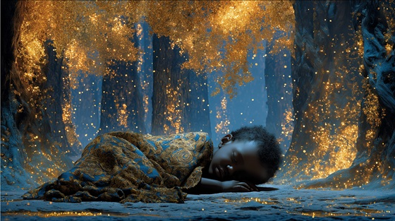

In the oral epic of the Dausi, the figure of Naa Gbewaa emerges as the mythic founder of the Dagomba kingdom — a child not merely born of man and woman, but foretold by the gods and ancestral spirits. His birth is shrouded in supernatural phenomena: the sky thundered, the earth trembled, and sacred drums beat in unison across the unseen world.
The ancestors whispered his name before his first breath, and it was said the world itself tilted slightly to prepare for his coming. Gbewaa was not only a child of destiny — he was the embodiment of leadership, a vessel of divine will. Through him, the Dagomba people would rise, and the city of Lagadu would become the heart of a royal legacy.
His arrival marked the turning of an age — from chaos to cosmic order. In every village and court, griots spoke of his name as both a prophecy fulfilled and a warning: for where Gbewaa walks, kingdoms are born, and the old world burns behind him.
The Birth of Gbewaa
From silence rose a sacred cry,
Beneath the storm-foretold sky.
The earth did tremble, winds grew still,
A soul was born with a king’s will.
The stars aligned, the spirits knew,
The dawn of fate was breaking through.
Born of blood and flame and fire,
Heir to thunder, truth, and lyre.
From shadowed dust the gods did weave,
The child who kings and myths believe.
His mother’s pain, the river wept,
The ancestors their promise kept.
Drums in the dark foretold the name,
Gbewaa — the forge from which kings came.
A whisper carried on the rain,
The spirits called him forth again.
Born of blood and flame and fire,
Heir to thunder, truth, and lyre.
From shadowed dust the gods did weave,
The child who kings and myths believe.
The old ones carved his fate in stone,
A voice to rule, a heart alone.
The pulse of power in his chest,
A newborn king with no need for rest.
He rose with light in infant eyes,
The kingdom stirred, the dead would rise.
Born of blood and flame and fire,
Heir to thunder, truth, and lyre.
From shadowed dust the gods did weave,
The child who kings and myths believe.
Beneath the moon, the elders cried,
The line of kings would not subside.
Through flesh and soul, through blood and flame,
A kingdom’s voice would speak his name.
So let the griots sing again,
Of Gbewaa born through sacred pain.
The storm gave way, the fire ceased—
And from the silence rose a beast.